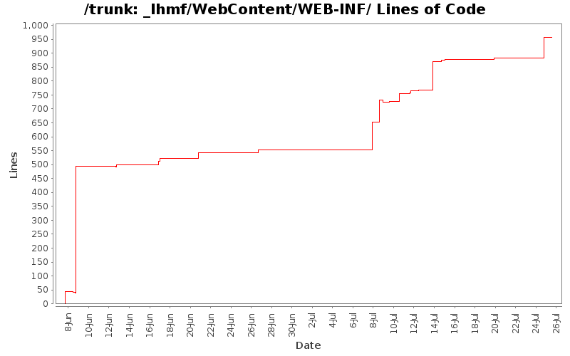

[root]/_lhmf/WebContent/WEB-INF
 jsp
(15 files, 880 lines)
jsp
(15 files, 880 lines)
 mobile
(1 files, 123 lines)
mobile
(1 files, 123 lines)
 lib
(45 files, 0 lines)
lib
(45 files, 0 lines)
 tags
(1 files, 84 lines)
tags
(1 files, 84 lines)

| Author | Changes | Lines of Code | Lines per Change |
|---|---|---|---|
| Totals | 43 (100.0%) | 1150 (100.0%) | 26.7 |
| l.moretto88@gmail.com | 23 (53.5%) | 507 (44.1%) | 22.0 |
| jyxpowa@gmail.com | 6 (14.0%) | 480 (41.7%) | 80.0 |
| francesco.brundu@gmail.com | 13 (30.2%) | 159 (13.8%) | 12.2 |
| hasmet87@gmail.com | 1 (2.3%) | 4 (0.3%) | 4.0 |
modifiche security per android
6 lines of code changed in 1 file:
prime correzioni successive al cambio db
0 lines of code changed in 1 file:
79 lines of code changed in 1 file:
Forse fixato bug controllore ajax activeMember; testare
24 lines of code changed in 1 file:
Modificato applicationContext-security.xml per i permessi per la pagina che dovrà autenticare la mail.
1 lines of code changed in 1 file:
Effettuata anche la registrazione normale. Manca da fare l'invio delle mail.
1 lines of code changed in 1 file:
Aggiunta registrazione facebook. Modificata pagina login.jsp. Aggiunto un permesso per /siognup* su applicationContext-security.xml
1 lines of code changed in 1 file:
modificato LoginSuccessfullHandler.java: quando un login ha successo, mette nella session le chiavi "member_type" con l'intero del tipo di membro, "username" con l'username del membro, "user" con il nome del membro (per stamparlo nelle pagine web: "Ciao <membro>"
OCCHIO a come sono scritte le query nei vari *Interface: spesso mancano spazi tra "from Tabella" e "where ..."
4 lines of code changed in 1 file:
Aggiunti gli injection mancanti del sessionFactory
4 lines of code changed in 1 file:
Aggiunti bean injection della sessionFactory mancanti
16 lines of code changed in 1 file:
-Aggiunto OAuth2 Provider lato server per fornire access token ai client android. In questo modo i client dovranno fare il logn solo una volta, e per il resto useranno l'access token. (https://developers.google.com/accounts/docs/MobileApps)
-Iniziato sviluppo client android, con prova di login (spring social con custom provider per OAuth Gas)
87 lines of code changed in 2 files:
4 lines of code changed in 1 file:
4 lines of code changed in 1 file:
Tolti alcuni errori.....prossimo commit a fine giornata
4 lines of code changed in 1 file:
FACEBOOK!!!
36 lines of code changed in 1 file:
migliorie pagina di login
4 lines of code changed in 1 file:
FUNZIONANO GLI OPENID!!!!! (tipo google, e parecchi altri...) per proivare con google scrivere nella casella di testo "Identity" questo url "https://www.google.com/accounts/o8/id" e vedrete la magia!
Al momento però gli openid non vengono registrati, quindi non fa effettivamente il login...
IMPORTANTE: dato che l'app sta diventando pesantina a causa delle librerie, ho dovuto modificare i parametri della VM di tomcat. Lo potete fare da eclipse andando a modificare la configurazione di avvio del programma, e aggiungendo ai parametri della VM
questa cosa:
-XX:PermSize=256m -XX:MaxPermSize=256m -XX:+DisableExplicitGC
39 lines of code changed in 2 files:
troppa roba. se avete dubbi chiedete.
Più che altro guardate come ho usato le annotazioni @Transaciton e @PreAuthorize un pò in giro nel codice.
112 lines of code changed in 5 files:
about to do the spring revolution!!!
-aggiunte librerie per spring security
-aggiunto username in index.tag
-aggiunto uso di spring:url al posto degli url normali nei file jsp
-commentato intero contenuto di HibernateFilter, dovrà sparire
-aggiunti file XML per creazione contesto applicativo
107 lines of code changed in 4 files:
Added deserializer: WARNING it does not work yet, do not revert to this revision unless you want to debug ProductDeserializer.java
8 lines of code changed in 1 file:
-fixata query per ottenimento log. usa Timestamp e 'between ... and ...'
-creato ObjectMapper customizzato (CustomObjectMapper.java) per serializzazione custom json di Member. Usare questa classe per imostare serializzatori custom per eventuali altre classi (se le classi hanno loop di dipendenze la serializzazione crasha, quindi bisogna scegliere bene cosa serializzare e cosa no)
-modificato lhmf-servlet.xml per impostare ObjectMapper customizzato per la serializzazione degli oggetti hibernate
-aggiunto controllo in AjaxController che, se arriva richiesta per i log, l'utente loggato sia di tipo admin (3)
13 lines of code changed in 1 file:
Removed unused resources
0 lines of code changed in 1 file:
Added JSON GET controller, to get json data via http; added example on "index_supplier.jsp" to show getJSON use; added scripts fragment on template (index.tag); IMPORTANT: put jackson...jar in classpath.
27 lines of code changed in 1 file:
Added HibernateInterface, wrapper methods to use hibernate
5 lines of code changed in 2 files:
LoginFilter added. Shows a regression when opening it with chromium: it does not get css
9 lines of code changed in 1 file:
Refactored HibernateFilter using web.xml instead of annotations
14 lines of code changed in 1 file:
Added static resources mapping; added custom attribute for tags in index.tag
15 lines of code changed in 1 file:
-aggiunto Filter per sessioni hibernate. Ad ogni richiesta viene automaticamente creata una sessione, dalla quale si crea una transazione. La Session viene messa come attributo nella request e deve essere usata per accedere al database. quando il controllo torna al filtro, esso fa il commit della transazione. se vengono sollevati Throwable, viene fatto il rollback della transazione.
12 lines of code changed in 1 file:
457 lines of code changed in 1 file:
Added stub for templating index file
0 lines of code changed in 1 file:
Fixed Hello Spring test, mapped on 'hello'
13 lines of code changed in 1 file:
Base and directory structure; do NOT use previous project called lhmf_gas
44 lines of code changed in 2 files: